Average weight per ward/month
573 tonnes
Or the weight of 82 x 
Most waste
Landfill General (17147)
Inerts (14554)
Timber (10543)
Least waste
Ink Cartridges (1) or 882 
Cans (3) or 185,220 
Tetrapak (7) or 7 million